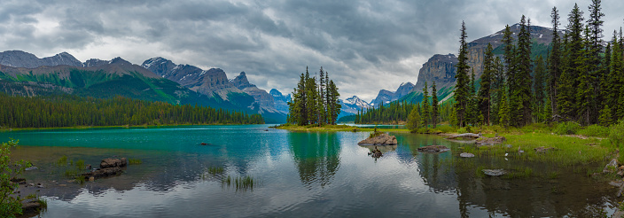
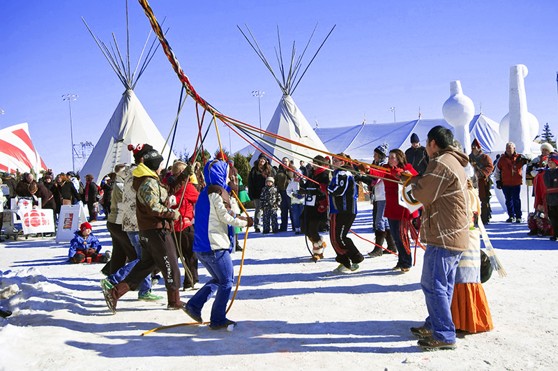
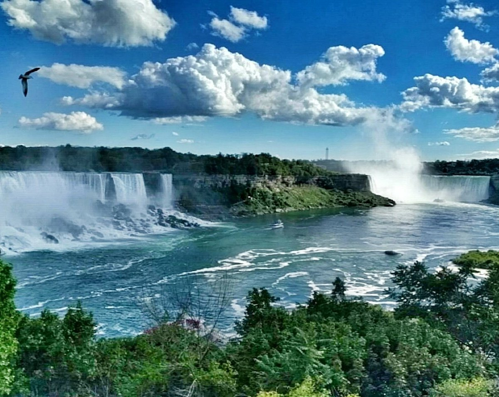

Location:
Canada is a vast country located in North America. It stretches from the Atlantic Ocean in the east to the Pacific Ocean in the west and reaches up to the Arctic Ocean in the north. It shares its southern border with the United States, making it the second-largest country in the world by land area.
Population:
As of my last knowledge update in September 2021, Canada had a population of approximately 38 million people. It is known for its relatively low population density, considering its immense landmass, making it one of the world's least densely populated countries.
Overview
Interesting Facts
- Canada is the second-largest country in the world by land area, covering approximately 9.98 million square kilometers.
- Canada is an officially bilingual country with both English and French as its official languages.
- Canada is known for its diverse culture and is home to people from various backgrounds and ethnicities.
- Canada has a publicly funded healthcare system, providing access to essential medical services for its residents.
- Canada is the world's largest producer of maple syrup, with Quebec being a significant maple syrup-producing region.
- Canada's national parks, like Banff and Jasper, showcase some of the world's most stunning natural landscapes.

Culture
Canada's culture is a rich tapestry woven from the threads of its indigenous heritage, European colonization, and waves of immigration from around the world. It is marked by diversity, inclusivity, and a strong commitment to multiculturalism. Here's a discussion of Canada's culture, traditions, and customs, including insights into its art, music, and festivals:
- Culture and Traditions:
- Indigenous Heritage: Canada's indigenous peoples, including First Nations, Inuit, and Métis, have deep-rooted cultural traditions that span thousands of years. They have a profound influence on the country's art, spirituality, and way of life.
- Cultural Diversity: Canada is often described as a cultural mosaic due to its diverse population. People from various ethnic backgrounds have contributed to the nation's cultural fabric. This diversity is celebrated, and cultural festivals from around the world are common.
- Official Languages: Canada is officially bilingual, with English and French as its official languages. This linguistic diversity is a reflection of its history, with French-speaking communities primarily in Quebec.
- Politeness and Friendliness: Canadians are known for their politeness and friendliness. The phrase "sorry, eh?" is a stereotype that captures the polite nature of many Canadians. This friendliness extends to a strong sense of community and volunteerism.
- Art:
- Visual Arts: Canada has a thriving visual arts scene, with renowned artists like Emily Carr and the Group of Seven known for their landscape paintings. Contemporary Canadian artists continue to push boundaries and gain international recognition.
- Indigenous Art: Indigenous art, including traditional crafts, sculptures, and contemporary works, is a vital part of Canada's artistic landscape. It often reflects connections to nature, spirituality, and cultural stories.
- Music:
- Canadian Music Scene: Canada has made significant contributions to the global music industry. Artists like Leonard Cohen, Joni Mitchell, and Neil Young are internationally acclaimed. Canada also has a vibrant indie music scene.
- Genres: Canadian musicians cover a wide range of musical genres, including rock, pop, folk, hip-hop, and electronic music. The country's music festivals, like the Montreal Jazz Festival, attract music lovers from around the world.
- Festivals:
- Cultural Festivals: Canada hosts numerous cultural festivals throughout the year, celebrating the heritage of various communities. The Toronto International Film Festival (TIFF) and Caribana in Toronto are examples of cultural celebrations.
- Winter Festivals: Given Canada's cold winters, winter festivals are a tradition. The Quebec Winter Carnival and the Winterlude festival in Ottawa showcase ice sculptures, snow activities, and cultural events.
- Canada Day: July 1st is Canada Day, celebrating the country's confederation in 1867. Festivities include fireworks, parades, concerts, and displays of national pride.
- Indigenous Festivals: Events like the Pow Wow showcase indigenous music, dance, and culture. The Gathering of Nations Pow Wow in Alberta is one of the largest gatherings of indigenous people in North America.

Tourism
Canada offers a vast array of tourist destinations and activities, from stunning natural wonders to vibrant cities. Here's a guide to some of the most popular places to visit and things to do when exploring this diverse country:
- Popular Tourist Destinations:
- Banff National Park, Alberta: Explore the breathtaking Rocky Mountains, pristine lakes, and abundant wildlife. Hiking, skiing, and wildlife viewing are top activities here.
- Niagara Falls, Ontario: Witness the awe-inspiring natural wonder of Niagara Falls, with boat tours, scenic viewpoints, and nearby wineries to enjoy.
- Old Quebec City, Quebec: Step back in time while wandering the charming streets of Old Quebec, a UNESCO World Heritage site. Savor French cuisine and immerse yourself in history.
- Vancouver, British Columbia: Experience the best of urban and natural attractions in Vancouver. Don't miss Stanley Park, Granville Island, and the diverse culinary scene.
- Landmarks and Activities:
- CN Tower, Toronto: Visit the iconic CN Tower for panoramic views of Toronto. You can even experience the thrill of the EdgeWalk, a hands-free walk around the tower's edge.
- Parliament Hill, Ottawa: Explore the historic buildings of Parliament Hill, where you can witness the Changing of the Guard ceremony during the summer months.
- Icefields Parkway, Alberta: Drive along the stunning Icefields Parkway, which offers breathtaking vistas, glaciers, and access to hiking trails and pristine lakes.
- Outdoor Adventures: Canada is an outdoor enthusiast's paradise. Enjoy skiing and snowboarding in Whistler, kayaking in the Bay of Fundy, or hiking in Gros Morne National Park in Newfoundland.
- Travel Tips and Recommendations:
- Weather: Be prepared for varying climates. Winters can be extremely cold, especially in northern regions, so pack accordingly.
- Healthcare: Ensure you have travel insurance and access to healthcare services, as medical expenses can be high for non-residents.
- Language: While English is widely spoken, it's helpful to learn a few basic French phrases, especially if you're visiting Quebec.
- Currency: The Canadian dollar (CAD) is the official currency. Credit and debit cards are widely accepted, but it's a good idea to carry some cash, especially in remote areas.
- Safety: Canada is generally a safe destination, but it's always wise to exercise common sense and be aware of your surroundings. Respect local wildlife and adhere to park rules for a safe outdoor experience.

Food
Personne verra ça de toute façon (ceci est a but humoristique et n'a pas pour but de prendre position sur la guerre actuelle)